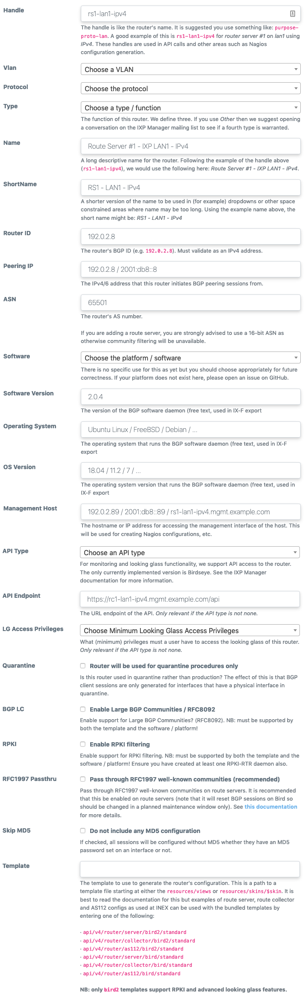

Routers
Note that a number of pages redirect here where we have collated documentation on route collectors, route servers, AS112 services and IRRDB filtering.
IXP Manager can generate router configuration for typical IXP services such as route collectors, route servers and AS112 services. How this is done has been changed significantly from v3 to v4.
Note that until officially deprecated, the older v3 methods still work and the official v3 documentation should be referenced for that.
Managing Routers
The basic elements of a router are configured in IXP Manager under the IXP Admin Actions - Routers option on the left hand menu.
When you goto add / edit a router, the green help button willl provide explanatory details on each field of information required:

From the router management page, you can:
- add / edit / delete a router;
- view all the details of a router;
- generate and view a router's configuration.
Configuration Generation Overview
The simplest configuration to generate is the route collector configuration. A route collector is an IXP router which serves only to accept all routes and export no routes. It is used for problem diagnosis, to aid customer monitoring and for looking glasses (see INEX's here).
The standard configuration simply pulls in a fairly standard header (sets up router ID, listening address and - for the collector at least - some unused filters) and creates a session for all customer routers on the given VLAN.
When adding a router, you give it a handle. For example: rc1-lan1-ipv4 which, for INEX, would mean a route collector on peering LAN1 using IPv4. Then - for the given router handle - the configuration can be generated and pulled using the API as follows:
#! /bin/sh
# The API Key.
# This is generated in IXP Manager via the top right menu: *My Account -> API Keys*
KEY="your-admin-ixp-manager-api-key"
# The base URL of your IXP Manager install plus: 'api/v4/router/gen_config'
URL="https://ixp.example.com/api/v4/router/gen_config"
# The handle is as described above:
HANDLE="rc1-lan1-ipv4"
# Then the configuration can be pulled as follows:
curl --fail -s -H "X-IXP-Manager-API-Key: ${KEY}" ${URL}/${HANDLE} >${HANDLE}.conf
Configurations for the route server and AS112 templates can be configured just as easily.
The stock templates for both are secure and well tested and can be used by setting the template element of the router to one of the following:
- AS112:
'api/v4/router/as112/bird/standard' - Route Server:
'api/v4/router/server/bird/standard'
We also provide sample scripts for automating the re-configuration of these services by cron. See the -v4 scripts in this directory. These are quite robust and have been in production for ~3 years at INEX (as of Jan 2017).
Examples
We use Travis CI to test IXP Manager before pushing new releases. The primary purpose of this is to ensure that the configuration for routers generated matches known good configurations from the same sample database.
These known good configurations also serve as useful examples of what the standard IXP Manager configuration generates.
See these known good configurations here with the prefix ci-apiv4- and:
as112: AS112 router configurations conforming to rfc7534 (AS112 Nameserver Operations) and implementing rfc7535 (AS112 Redirection Using DNAME). There are configs to serve queries over both IPv4 and IPv6.rc1: route collector configurations. Peering with the route collector is mandatory at many IXPs including INEX. These are incredably useful for monitoring, diagnosing issues and providing looking glasses. We also use the quarantine version of these for turning up new member connections.rs1: route collector configurations. See below for full details of what these implement. Note also that theci-apiv4-rs1-lan2-ipv4.conffile includes BGP large communities (rfc8092).
Route Servers
Normally on a peering exchange, all connected parties will establish bilateral peering relationships with each other customer connected to the exchange. As the number of connected parties increases, it becomes increasingly more difficult to manage peering relationships with customers of the exchange.
However, by using a route servers for peering relationships, the number of BGP sessions per router stays at two: one for each route server (assuming a resilient set up). Clearly this is a more sustainable way of maintaining IXP peering relationships with a large number of participants.
You will have learnt above how to automatically generate route server configurations. This section goes into a bit more specific detail on INEX's route server configuration (shipped with IXP Manager) and why it's safe to use.
The features of the route server configurations that we generate include:
- full prefix filtering based on IRRDB entries (can be disabled on a per member basis if required);
- full origin ASN filtering based on IRRDB entries (can be disabled on a per member basis if required);
- in all cases, prefix filtering for IPv4 and v6 based on the IANA special purpose registries (also known as bogon lists);
- ensuring next hop is the neighbor address to ensure no next hop hijacking;
- max prefix limits;
- multiple VLAN interfaces for a single member supported;
- large BGP communities supported;
- a decade of production use and experience.
There are some old notes on route server testing here which may also be useful.
IRRDB Prefixes and ASN Filtering
IXP Manager can maintain a list of member route:/route6: prefixes and origin ASNs as registered in IRRDBs in its database and then use these to, for example, generate strict inbound filters on route servers.
Prerequisite: you need to have set up some IRRDB sources (e.g. RIPE's whois service) under the IXP Admin Actions / IRRDB Configuration on the left hand side menu. There is a database seeder to install some to start you off via the following (but thius is typically done during installation):
./artisan db:seed --class=IRRDBs
BGPQ3 is a very easy and fast way of querying IRRDBs. You first need to install this on your system. Then configure the path to it in config/ixp_tools.php. If you have not used this file before, you'll need to create your own local copy as follows:
cp config/config/ixp_tools.php.dist config/config/ixp_tools.php
Then set the full call path for bgpq3 in this file:
<?php
'irrdb' => [
'bgpq' => [
'path' => '/path/to/bgpq3',
],
],
To populate (and update) your local IRRDB, run the following commands (changing the path as appropriate):
/srv/ixpmanager/artisan irrdb:update-prefix-db
/srv/ixpmanager/artisan irrdb:update-asn-db
These should be added to cron to run ~once per day (using the --quiet flag).
There are four levels of verbosity:
-quiet: no output unless there's an error / issue.- no option: simple stats on each customer's update results.
-vv: include per customer and overall timings (database, processing and network).-vvv(debug): show prefixes/ASNs added remove also.
You can also specify a specific customer to update (rather than all) with an additional free form parameter. The database is searched for a matching customer in the order: customer ASN; customer ID (database primary key); and customer shortname. E.g.:
/srv/ixpmanager/artisan irrdb:update-prefix-db 64511
The IRRDB update commands will:
- iterate over all route server client customers for IPv4 and IPv6 (unless a specific customer is specified);
- use the appropriate AS macro or ASN;
- query the RADB against the appropriate source set for that customer;
- compare prefixes(/ASNs) in the database already (if any) against RADB and insert / delete as appropriate;
- validate the prefix for proper CIDR notation before database inserts;
- update the last_seen time for all prefixes(/ASNs) for that customer;
We use transactions to update the database so, even in the middle of a refresh, a full set of prefixes for all customers will still be available.
Note that our current implementation only queries RADB as BGPQ3 does not support the RIPE whois protocol. Our version will however set the RADB source database according to the member's stated IRRDB database as set on the customer add / edit page - so, for customer's registered with the RIPE IRRDB, the RIPE database of RADB is queried.